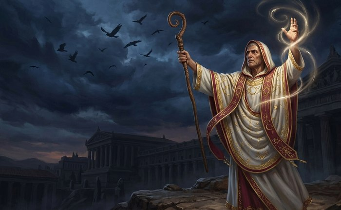
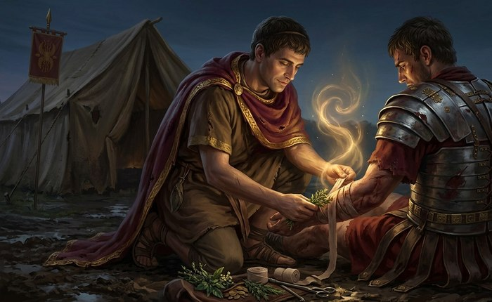
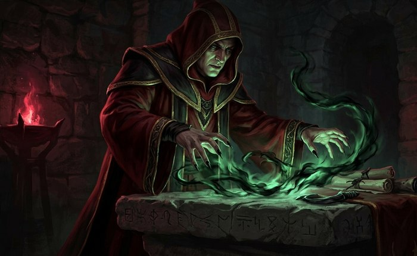
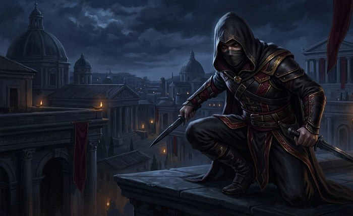
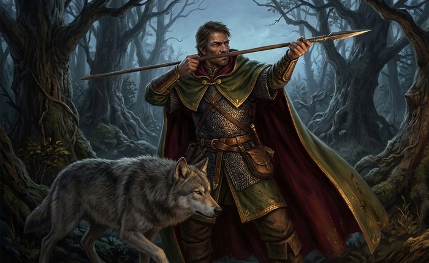
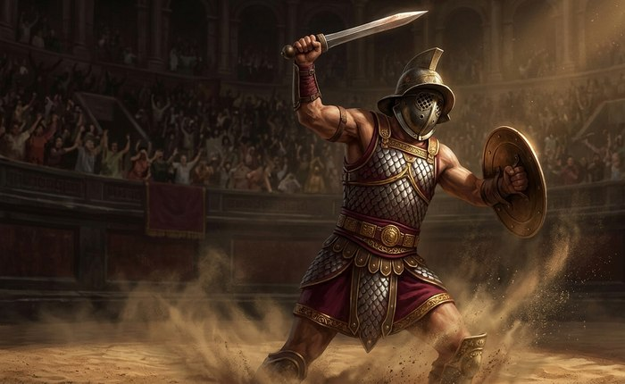
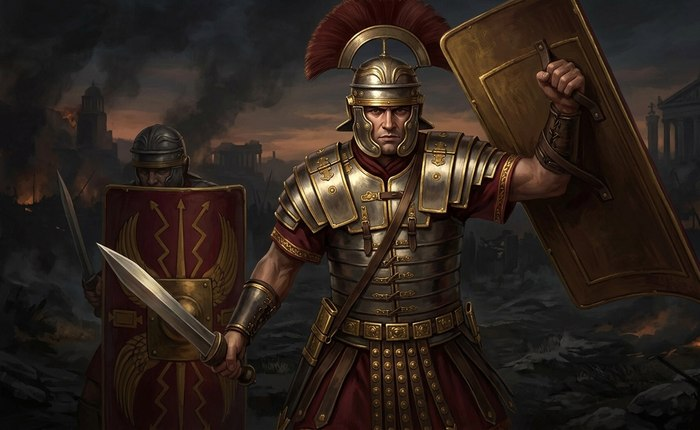
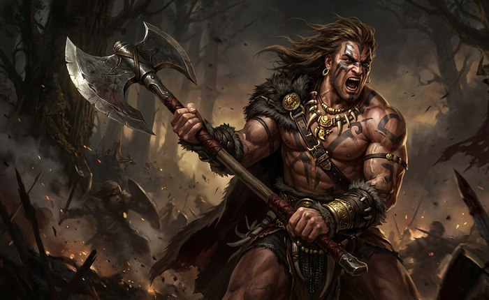

Classes & Roles
Classes are role templates to help you get started. Roleplay, background, and player choices define your character beyond mechanical labels.

Augur (Light — Mage/Support)
Theme: Priestly diviners who read signs from the sky and birds to grant foresight and favor.
Role: Support caster — buffs, predictive effects, and short-range battlefield control.
Stat Bonus: +3 Ingenium
Signature Abilities
- Birdsight — Reveal hidden enemies or traps in a small area for a short time.
- Favour of the Sky — Grant an ally a temporary luck/crit bonus.
- Auspice — A short predictive buff that reduces incoming damage for a target for several seconds.
Starting Gear
- Light robe, ritual staff, small amulet
Progression
Early: more support spells and short cooldown battlefield reveals. Mid: group-wide auguries and longer buffs. Late: unique god-favor rituals that can change encounter outcomes (mythic-tier abilities).

Medicus (Light — Healer/Support)
Theme: Battlefield physicians trained in wound-care, herb-lore, and the old belief that healing hands carry a touch of the divine.
Role: Primary healer — sustained HP recovery, cleansing harmful conditions, and keeping the party standing.
Stat Bonus: +2 Ingenium, +1 Vigor
Signature Abilities
- Field Dressing — A strong single-target heal, fast enough to use mid-combat.
- Antidote's Grace — Cures poison and other harmful conditions on an ally.
- Triage — A group-wide heal, weaker per-target but reaching everyone nearby.
Starting Gear
- Satchel of herbs and bandages, a simple probe, a field tunic
Progression
Early: single-target healing and condition cures. Mid: group heals and preventative wards. Late: legendary remedies said to pull the dying back from Pluto's own doorstep.

Haruspex (Light — Offense Caster)
Theme: Etruscan-influenced ritualists who use blood rites and curses.
Role: Offensive caster — curses, damage-over-time, and dark rituals.
Stat Bonus: +3 Ingenium
Signature Abilities
- Rite of the Entrails — Place a curse that reveals weaknesses and increases damage taken by the target.
- Blood Sacrament — Convert a portion of the caster's health to power a devastating ritual.
- Mark of Decay — Damage-over-time effect that saps enemy strength.
Starting Gear
- Light ritual garb, sacrificial blade (ceremonial), bone talismans
Progression
Early: single-target curses and DOTs, plus a raised companion built from an enemy you personally helped kill. Mid: group curses and spreading area-rituals. Late: executions against the already-weakened, sweeping necrotic storms, and a mythic wail from the underworld that can cut down several enemies at once.

Speculator (Medium — Rogue/Scout)
Theme: Spies and scouts for commanders — masters of infiltration, intelligence, and assassination.
Role: Stealth DPS and utility — traps, poisons, reconnaissance.
Stat Bonus: +3 Agilitas
Signature Abilities
- Silent Approach — Enter stealth; next attack from stealth deals bonus damage.
- Poisoned Teneral — Apply a stacking poison that weakens defenses.
- Field Report — Send a short-range recon ping that reveals enemy positions for allies.
Starting Gear
- Leather jerkin, daggers, shortbow, utility kit (lockpicks, disguise)
Progression
Early: stealth attacks and single-target poisons. Mid: area traps and group reconnaissance tools. Late: assassination rituals and mythic shadow-steps gifted by patron gods.

Venator (Medium — Ranger/Hunter)
Theme: Frontier hunters and trackers who patrol the wild boundaries of the empire.
Role: Ranged DPS and control — tracking, traps, and animal companions.
Stat Bonus: +2 Agilitas, +1 Virtus
Signature Abilities
- Huntmaster's Mark — Mark a target to take increased damage from physical ranged attacks.
- Net & Javelin — Ranged entangle that reduces enemy mobility; a follow-up javelin deals bonus damage.
- Call of the Wild — Summon a temporary beast companion (wolf or boar) to fight alongside you.
Starting Gear
- Mail shirt (medium), hunting javelins, shortbow, hunting cloak
Progression
Early: improved tracking and ranged focus. Mid: a bound beast companion and tactical traps. Late: coordinated strikes alongside that companion, culminating in a volley worthy of the Wild Hunt itself.

Gladiator (Medium — Arena Fighter)
Theme: Trained combatants of the arena; versatile weapon specialists who survive by skill and showmanship.
Role: Versatile midline fighter — crowd control, showy finishers, and weapon specializations.
Stat Bonus: +2 Virtus, +1 Agilitas
Signature Abilities
- Showman's Feint — Taunt and briefly reduce enemy accuracy while buffing your next strike.
- Gory Finish — Execute low-health enemies with a cinematic finishing strike.
- Weapon Mastery — Choose a weapon style (spear, net & trident, or sword & shield) that grants passive bonuses and unique active moves.
Starting Gear
- Scale armor (medium), gladius or trident (player choice), small shield (optional), leather greaves
Progression
Early: weapon style special attacks. Mid: arena techniques that control crowds and earn spectators' favor (temporary buffs). Late: legendary arena techniques and contracts with patrons (some grants granted by gods of sport/contest).

Legionary (Heavy — Tank)
Theme: The disciplined core of Rome's armies; masters of formation and defense.
Role: Tank and group protector — shields, stances, and formation-based buffs.
Stat Bonus: +3 Vigor
Signature Abilities
- Testudo — Form a shield wall that greatly reduces incoming ranged damage to the group for a short time.
- Hold the Line — Taunt and gain increased damage resistance while reducing movement.
- Gladius Cleave — A close-range cleave that damages multiple enemies in front of you.
Starting Gear
- Heavy lorica (plate/scale), scutum (large shield), gladius, helmet
Progression
Early: stances and single-target tanking. Mid: group formation buffs, improved shields, and challenge mechanics. Late: legendary legion tactics and small-unit command abilities that reshape battlefield engagement.

Barbarian (Heavy — Berserker/Heavy Fighter)
Theme: Non‑Roman heavy fighters from the frontiers — savage, powerful, and less disciplined but devastating in open combat.
Role: Heavy DPS and disruption — rage mechanics, area bursts, and raw power.
Stat Bonus: +3 Virtus
Signature Abilities
- Rage of the North — Enter a berserker state that increases damage but reduces defense for a limited time.
- Thundering Maul — A heavy two‑handed strike that staggers and knocks back smaller foes.
- War Cry — Area debuff that lowers enemy morale and damage output while boosting allied resolve near the barbarian.
Starting Gear
- Heavy hide or mixed plate, two‑handed axe or maul, war necklace
Progression
Early: single-target power and rage build-up. Mid: area stuns, improved crowd disruption. Late: mythic rage forms and brutal finishers tied to frontier gods and spirits.